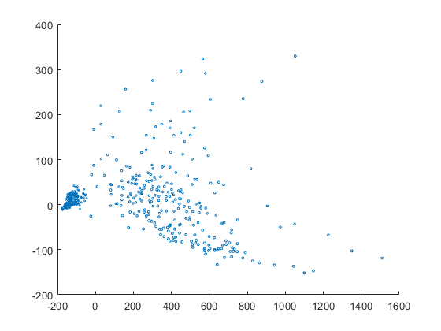
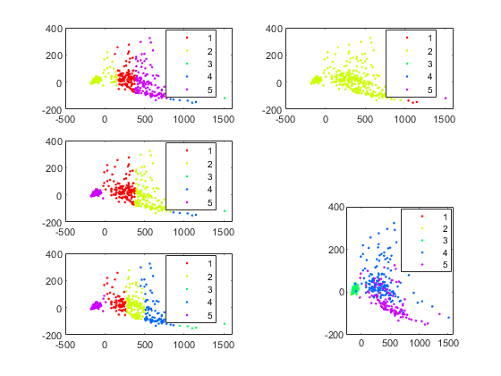
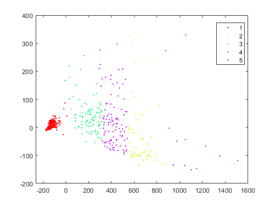

Contents
load humanactivity.mat;
nObs = table('Size', [1,5],'VariableTypes',{'int32','int32','int32','int32','int32'},'VariableNames',actnames);
nObs{1,1} = size((actid(actid == 1)),1);
nObs{1,2} = size((actid(actid == 2)),1);
nObs{1,3} = size((actid(actid == 3)),1);
nObs{1,4} = size((actid(actid == 4)),1);
nObs{1,5} = size((actid(actid == 5)),1);
rng(1234);
n = size(feat,1);
idxNum = randi(n, 1, 1000);
dataTat = feat(idxNum,:);
id = actid(idxNum);
D)
D = 1*squareform(pdist(dataTat));
MDS = cmdscale(D, 2);
figure;
scatter(MDS(:,1), MDS(:,2), id);

E)
F)
waysofClustering = ["complete" "single" "average" "centroid" "ward"];
subploti = 1;
figure;
for index = waysofClustering
LonAnalysis = linkage(D,index);
clusterx = cluster(LonAnalysis,'MaxClust',5);
subplot(3,2,subploti);
gscatter(MDS(:,1),MDS(:,2),clusterx);
subploti = subploti + 1;
end
subplot(2,3,6);
gscatter(MDS(:,1), MDS(:,2), id);
Warning: Non-monotonic cluster tree -- the centroid linkage is probably not
appropriate.

G)
close all;
figure;
clustersaNALYSIS = kmeans(D,5);
gscatter(MDS(:,1),MDS(:,2),clustersaNALYSIS);

H)
I)
close all;